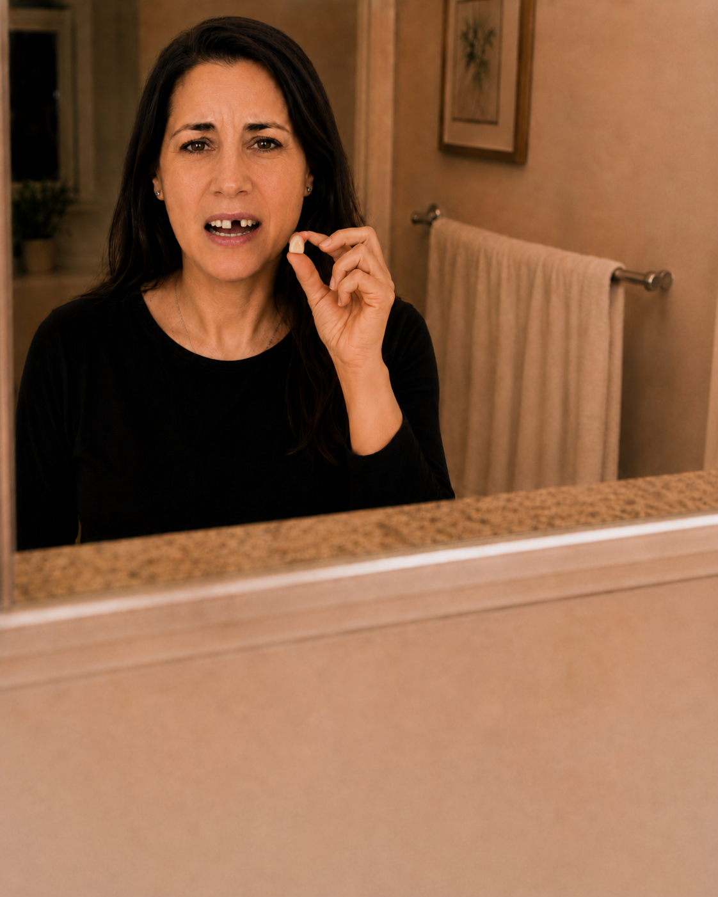

Entre estas dos fotos hay ocho meses. Y una decisión.
El obstáculo más grande que enfrentó Sandra no fue médico. No fue el miedo a la cirugía, ni la distancia, ni el tiempo. Fue una creencia que se instaló en su cabeza el día que perdió ese diente y que la tuvo paralizada durante meses:
«Esto no es para mí. No puedo pagarlo.»
Sandra trabaja como defensora pública en Temuco. Sabe lo que es pelear por otros. Lo que no sabía era que estaba perdiendo la pelea más importante — la de volver a ser ella misma.
El accidente que lo cambió todo
Sandra practicaba trekking en la cordillera cuando tuvo una caída. No fue grave — pero fue suficiente. Un golpe directo le costó un diente frontal. En cuestión de segundos, algo que la había acompañado toda su vida desapareció.
Lo que vino después fue más lento y más pesado que el accidente mismo.
Cuando tu trabajo es hablar y ya no puedes
Como defensora pública, Sandra vive en salas de audiencia. Su trabajo es argumentar, convencer, defender a personas que no tienen a nadie más. Para eso necesita presencia, seguridad, voz.
Pero después de perder ese diente, algo había cambiado. Se sorprendía tapándose la boca con la mano mientras hablaba. Modulaba diferente las palabras para que no se notara el espacio. Evitaba reírse frente a los jueces.
La herramienta más importante de su trabajo — su capacidad de expresarse — estaba comprometida. Y eso la consumía por dentro.

El ritual que nadie debería tener que vivir
La prótesis removible fue la solución de emergencia. Funcionaba — en el sentido más básico de la palabra. Pero cada noche, frente al espejo del baño, Sandra tenía que sacarse ese diente postizo y dejarlo en un vaso.
Un recordatorio diario, cada mañana y cada noche, de lo que había perdido. Un ritual que la agotaba más allá de lo físico.
Sabía que la solución definitiva era un implante dental. Lo buscó en internet, preguntó precios de referencia, hizo cuentas. Y ahí llegó el segundo golpe:
Asumió que era inalcanzable con su sueldo del sector público.
Así que siguió con la prótesis. Siguió tapándose la boca en sala. Siguió con ese ritual cada noche. Por meses.
Lo que encontró en San Martín Dent
Cuando Sandra llegó a nuestra clínica dental en Temuco, llegó con poca esperanza. No venía a hacer el tratamiento — venía solo a preguntar. A confirmar, pensaba, que no era para ella.
Lo que encontró fue distinto a lo que esperaba.
En San Martín Dent no solo evaluamos el caso clínico — evaluamos la situación completa de cada paciente. Tenemos facilidades de pago reales, diseñadas para que el implante dental sea una posibilidad concreta, no un lujo. Sandra no tenía que elegir entre su sueldo y su sonrisa.
Diseñamos juntos un plan de tratamiento y un esquema de pago que se ajustaba a su realidad. Y Sandra dijo que sí.
¿Crees que no puedes pagarlo? Antes de asumir, conversemos.
Consultar financiamientoEl proceso: simple y sin sorpresas
Un implante dental es un proceso predecible. No tiene misterios. En tres etapas, Sandra pasó de la prótesis removible a un diente permanente que no se distingue del resto.
¿Quieres ver el proceso clínico paso a paso con imágenes reales? Lee la historia de Laura →
Evaluación y plan de financiamiento
Evaluación clínica completa y diseño del plan de tratamiento. En la misma consulta definimos las opciones de pago disponibles para tu caso. Sin compromiso, sin sorpresas.
Colocación del implante y cicatrización
Instalamos el implante de titanio bajo anestesia local — indoloro, una hora de procedimiento. Luego viene el período de oseointegración (2 a 4 meses) en el que el implante se fusiona con el hueso. Vida completamente normal durante todo ese tiempo.
Corona definitiva — nunca más la prótesis
Instalamos la corona, el diente visible. Natural, funcional y permanente. Para Sandra fue el momento en que ese ritual nocturno terminó para siempre.
Sandra, hoy
Hay una versión de Sandra que se tapaba la boca en sala. Que modulaba sus palabras para ocultar un espacio. Que terminaba cada día con ese ritual frente al espejo.
Y hay la versión de Sandra que existe hoy.
Sandra hoy: en sala, apasionada, sin pensar en su boca.
«Pensé que un implante era inalcanzable para mí. Gracias a las facilidades de pago de San Martín Dent pude hacerlo. Fue la mejor decisión de mi vida.»— Sandra · Defensora Pública, Temuco
¿Llevas tiempo convencida de que no es para ti? Puede que te sorprendas.
Agendar evaluación¿Cuánto tiempo llevas con esa prótesis?
Cada mes que pasa con un diente removible, el hueso de esa zona se reduce. Lo que hoy es un procedimiento directo puede volverse más complejo — y más caro — con el tiempo.
Pero más que el hueso, hay algo que no se puede recuperar: el tiempo que ya pasaste ajustando tu forma de hablar, de reír, de relacionarte. Las audiencias en las que te tapaste la boca. Las fotos que evitaste. Las conversaciones que viviste a medias.
Sandra pensó que no podía. Por eso esperó meses. No tiene que ser tu historia.
Preguntas frecuentes sobre implantes dentales y financiamiento en Temuco
¿Cuánto cuesta un implante dental en Temuco?
El valor varía según el caso clínico. En San Martin Dent entregamos un presupuesto personalizado en la primera consulta. Muchos pacientes se sorprenden al descubrir que es más accesible de lo que imaginaban — especialmente con las facilidades de pago disponibles.
¿Puedo pagar mi implante en cuotas?
Sí. Contamos con planes de financiamiento que permiten distribuir el costo en cuotas mensuales manejables. Diseñamos el esquema de pago según tu situación específica.
¿Es mejor el implante que seguir con la prótesis removible?
En la gran mayoría de los casos, sí. El implante es permanente, no se mueve, no requiere retirarse cada noche y preserva el hueso. La prótesis removible es una solución temporal — funciona, pero tiene un costo diario en comodidad y autoestima que muchos no consideran al hacer las cuentas.
¿Cuánto dura el proceso completo?
Entre 3 y 6 meses, incluyendo la colocación del implante, la oseointegración (2–4 meses) y la corona definitiva. Durante todo ese tiempo llevas una vida completamente normal.